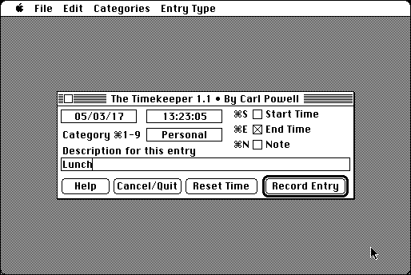

Download
tk.zip (61K) The TimeKeeper 1.1 repackaged into a zipped hfs disk image and checksum file. The disk image can be mounted with Mini vMac.
tk.sea.bin (57K) The TimeKeeper 1.1 in the original format.
copyright: Carl Powell
mod date: Dec 27, 1992
license: shareware
official url :
The Timekeeper
“Designed to help you log your time on your Macintosh computer and keep track of the various projects on which you are working.” (Reply from Carl Powell on 3/29/2005 states the shareware payment would still be accepted. But no further work is expected to be done on the program.)

If you find these downloads useful, please consider helping the Gryphel Project, which hosts them.
Here are the md5 checksums for the downloads, signed with Gryphel Key 5:
--------- GRY SIGNED TEXT --------- 00a3795239d2a706f0d2c8dfe4e0383f tk.zip 2cd8fa3ed4a3592f24143d5d0b47a5b1 tk.sea.bin ------- BEGIN GRY SIGNATURE ------- Gry/4Xa8CFcUzxdN/KomJNNfS1oU7e2S0HLqBbxRrAKqehkmXgZVpKT8iBkCrUnz 0b28K51m0e3l+p6vhLqbeOvM3o224J0vhk44NntjfFtrRtZSg5lhNt8sPXtidYDj fWv//Zj9MT+a2BAIFMERx7/oEbVS/ZuwXnGX2mZiVBLAIMyQ7Vi721NZWfMT1Yrq -------- END GRY SIGNATURE --------